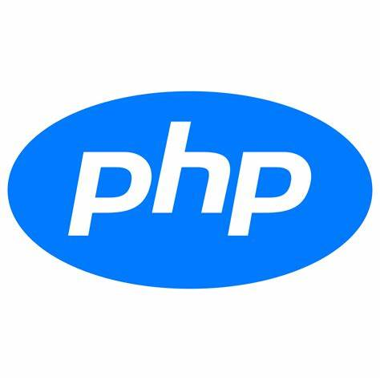

Expêriencia de mercado com as seguintes tecnologias



Construir um novo produto pode ser uma tarefa bem desafiadora. Sou experiente com desenvolvimento web e construções de API's performaticas e seguras trabalhando assim tanto com back-end quanto front-end.
Responsável pela manutenção e implementação de novas features em um sistema moldado com PHP. O sistema tinha como foco trabalhar com dados recuperados através de rastreadores logísticos e exibir a posição de um veiculo em viagem para o usuario final.
Responsável por realizar implementações focadas no back end e dar manutenção a sistemas de saúde, financeiro e de suprimentos. Utilizando como principal tecnologia o PHP, mas atuando ao mesmo tempo com tecnologias como nestjs, git, docker, GCP, ORACLE e outros.
Responsável por ensinar e apresentar tecnologias que vão introduzir o mundo do desenvolvimento as próximas gerações de programadores. Ensinando tecnologias como GIT, HTML, CSS, JavaScript, SQL e nodejs
Responsável por Modernização e reestruturação de sistemas legados. Atuando com PHP, Codeigniter, Laravel, Lumen e Docker, implementando tudo que o PHP pode oferecer com uma arquitetura 100% estruturada como sugere o próprio framework com alguns complementos.
Uma expêriencia sem igual, um novo idioma é uma das melhores coisas que pode acontecer na vida de uma pessoa. Atualmente com inglês avançado se comunicando normalmente com pessoas do mundo inteiro.
Formado desde 2021, tive expêriencias com desenvolvimento, web, android entre outros... Utilizando varios tipos de tecnologia para pequenos projetos. Nesta caminhada me deparei com tecnologias como C, C#, PHP, JavaScript, Java, Git e outros.